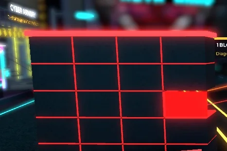
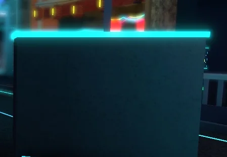

About this guide’s evidence
Reviewed against the linked Roblox documentation and published MeshMogul product limits. Recommendations and example scenes are guidance, not measured results. This review date does not represent a new native Studio test. Current UI details that still need confirmation are called out in the text.
Quick Takeaways
- Why it matters: A draw call is a CPU-to-GPU command asking the graphics card to render geometry with a specific shader/material/mesh state; GPU instancing lets Roblox draw many identical copies efficiently when mesh and appearance states match .
- How it affects your creations: Merging unrelated props breaks frustum culling and LOD distance scaling, while frequent property edits force FastClusters to rebuild; meanwhile, overlapping parts trap invisible faces inside your builds .
- What you can actually do about it: Audit unique
MeshId/material pairs, remove hidden interior overlaps before baking meshes, keep modular props reusable for instancing, and read MicroProfiler (Ctrl+F6) bar colors instead of guessing.
Visual field note / 03
Build the wall you need
Before · stacked blocks

More separate pieces create more internal boundaries.
After · one stretched block

Use simpler geometry when the shape allows it.
Whenever framerate dips in a crowded Roblox map, somebody in Discord immediately chimes in: "Just combine everything into one mesh to lower draw calls!"
That advice breaks half the maps that follow it. Turning an entire street block into one giant MeshPart wrecks camera frustum culling, stalls RenderFidelity distance simplification, and balloons collision memory—while ignoring the things that actually blow up frame times: material state fragmentation, cluster rebuilds, hidden internal faces, and misdiagnosed bottlenecks.
1. The Kitchen Analogy: Draw Calls vs. GPU Instancing
Imagine running a busy kitchen:
- High draw-call fragmentation is handing the chef 100 individual sticky notes for 100 completely different custom sandwiches—every sandwich needs a fresh pan, fresh toppings, and a fresh instruction (state change + draw command).
- GPU instancing is pinning up one recipe card for a classic turkey club alongside a count of "500 tables, here are their seat numbers" (same
MeshId, material, surface appearance, and static compatibility -> batched instanced rendering) .
Two vital caveats prevent over-simplifying this into myth:
- Repeating 500 identical barrels does not guarantee literally "1 draw call for the whole frame"—real draw counts still reflect shadow cascade passes, lighting passes, transparent overlays, and rendering clusters . What instancing does is keep those 500 copies dramatically cheaper per instance than 500 unshared unique
MeshParts. - Beware the
FastClustersrebuild trap: Roblox groups static humanoids/world geometry into rendering clusters (FastClusters) for batching. If a script constantly togglesColor,Material, orTransparencyacross grouped parts every frame, the engine has to invalidate and rebuild clusters instead of coasting on static batches .
Note on SLIM (Scalable Lightweight Interactive Models): Roblox's engine can automatically composite distant complex assemblies into lighter representations when streaming/LOD optimization applies (Rendering Performance), which works best when props remain clean modular assemblies rather than sprawling mile-wide mega-meshes .
2. Hidden Faces: The Silent Triangle Tax Nobody Sees
Before thinking about GPU batching, walk around the inside of your own builds.
Suppose you stack 20 standard Block parts vertically to make a decorative concrete pillar instead of sizing one pillar part cleanly:
- 20 stacked
Blockparts:20 × 12 triangles = 240 triangles—and 19 seam junctions × 2 capped faces = 38 trapped interior faces (76 triangles) staring into solid concrete where no camera will ever look . - 1 stretched
Blockpart:12 trianglestotal, zero hidden caps .
Why does that matter when converting Studio builds to meshes? Because combining overlapping or stacked parts without cleaning hidden overlaps carries those buried triangles forward into your mesh's EditableMesh vertex/triangle budget (Preflight Validation, Triangle Budgets, and Retained Previews).
Cleanup habit: Before baking any architectural prop, replace collinear stacked blocks with a single sized block whenever color/material doesn't change mid-run, and pull intersecting trim flush rather than burying half a plank inside a solid wall.
3. The Over-Merging Trap: When Bigger Meshes Perform Worse
If fewer MeshParts were always faster, combining an entire town into one MeshPart would run at 240 FPS. Here are three reasons over-merging backfires:
- Broken Frustum Culling: Roblox skips drawing
MeshParts whose bounding boxes lie completely outside the camera's view cone. If one 400-stud building-row mesh barely clips the left edge of your screen by two inches, the GPU still processes the entire 400-stud mesh . - Ruined
RenderFidelity.AutomaticLOD Transitions: Roblox's automatic LOD tiers evaluate distance at<250studs (full detail),250–500studs (medium), and500+studs (low) . A gigantic combined mesh measures proximity against one giant object instead of letting background buildings drop smoothly while nearby door frames stay sharp. - Wasted
CollisionFidelityMemory: Complex single-mesh shapes forceDefault/PreciseConvexDecompositionto chew far morePhysicsPartsdecomposition cost than small modular shells paired with cheapBoxcolliders (Collision Fidelity and Invisible Doorways).
4. Read MicroProfiler (Ctrl+F6) Instead of Guessing
Before optimizing anything, open Roblox's MicroProfiler (Ctrl+F6) and pause a representative slow frame. Check the top frame bar color :
| MicroProfiler Frame Color | What Engine Rule Triggered It | What It Actually Means |
|---|---|---|
| Orange | Jobs Wall Time > Render Wall Time |
Your frame is waiting on CPU simulation/scripts/physics, not draw calls! Mesh merging won't fix a runaway script loop. |
| Blue | Render Wall Time > Jobs Wall Time |
Render CPU submission dominates (excessive unique draw batches, cluster updates, lighting prep, or scene traversal). |
| Red | Render Wall Time > Jobs Wall Time AND GPU Wait Time > 2.5 ms |
The GPU itself is congested (pixel overdraw, shadows, transparent fills, high triangle/shader load). |
5. Read-Only Command Bar Audit: Check Your Workspace Fragmentation
Paste this read-only diagnostic into Studio's Command Bar (View -> Command Bar) to spot unique MeshId sprawl, multi-material splits, and unnecessary DoubleSided toggles in workspace:
Read-only Studio Command Bar inspection
-- Read-only: summarizes MeshPart reuse vs unique MeshId/Material combinations in workspace
local totalMeshParts = 0
local doubleSidedCount = 0
local uniqueMeshes: { [string]: boolean } = {}
local uniqueBuckets: { [string]: number } = {}
for _, inst in ipairs(workspace:GetDescendants()) do
if inst:IsA("MeshPart") then
totalMeshParts += 1
if inst.DoubleSided then
doubleSidedCount += 1
end
local idKey = inst.MeshId ~= "" and inst.MeshId or "(empty-preview)"
uniqueMeshes[idKey] = true
local bucket = string.format("%s | %s", idKey, inst.Material.Name)
uniqueBuckets[bucket] = (uniqueBuckets[bucket] or 0) + 1
end
end
local bucketCount = 0
for _ in pairs(uniqueBuckets) do
bucketCount += 1
end
local uniqueMeshCount = 0
for _ in pairs(uniqueMeshes) do
uniqueMeshCount += 1
end
print(string.format(
"[Render Audit] MeshParts=%d | UniqueMeshIds=%d | Unique(MeshId+Material)=%d | DoubleSided=%d",
totalMeshParts, uniqueMeshCount, bucketCount, doubleSidedCount
))
Notice the ratio: 500 MeshParts sharing 12 Unique(MeshId+Material) buckets is healthy modular reuse. 500 MeshParts with 480 unique buckets tells you your scene is fragmented across unshared meshes or constantly changing material variants.
6. How MeshMogul Helps Without Lying About Magic Speedups
Converting a cluttered 40-part detail sub-assembly into a modular 1-to-3 MeshPart prop with MeshMogul reduces Explorer/part replication bloat and gives you reusable MeshIds you can instance cleanly across your map. Just remember: MeshMogul organizes parts by compatible appearance groups rather than blindly erasing internal overlaps for you, and performance gains always come from modular reuse + clean collision + real MicroProfiler verification, not from pressing a single button (How to Compare Roblox Meshes Before and After Conversion).
Sources and technical references
Keep building
Before this guide: Compare Meshes Before & After